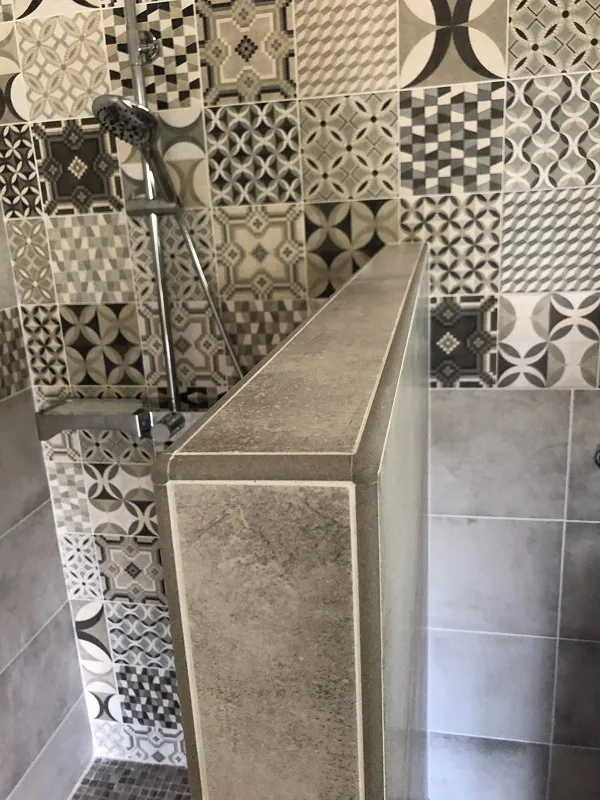

Pavés autobloquants et extérieurs
Allées carrossables, cours, terrasses. Décaissement, lit de pose stable, bordures et pente d'évacuation. Une base solide pour un pavage qui ne bouge pas.
Découvrir →De l'autre côté de la Durance, à un quart d'heure de Manosque. Pavés autobloquants pour vos extérieurs, salles de bain en carreaux de ciment, chape liquide et finitions au cordeau.
Oraison fait partie de notre secteur de proximité. Intérieur ou extérieur, on y intervient avec la même rigueur.

À une quinzaine de minutes de notre atelier des Quintrands, Oraison est un de nos terrains familiers. Anthony Borey y a posé aussi bien des pavés autobloquants dans des cours et des allées que des salles de bain rehaussées de carreaux de ciment. Dehors comme dedans, la préparation du support fait la durabilité.
On couvre le chantier de bout en bout. Sol, mur, intérieur, extérieur, neuf ou rénovation.
Allées carrossables, cours, terrasses. Décaissement, lit de pose stable, bordures et pente d'évacuation. Une base solide pour un pavage qui ne bouge pas.
Découvrir →
Grès cérame, grand format, faïence, carreaux de ciment. Sol et mur, pose droite ou décorative, joints réguliers et finitions soignées.
Découvrir →
Chape fluide anhydrite ou ciment, autonivelante, parfaite sur plancher chauffant. Le support plan indispensable avant la pose du revêtement.
Découvrir →
Douche à l'italienne, faïence 30x60, frise en carreaux de ciment, étanchéité. La pièce d'eau transformée, du sol au plafond.
Découvrir →
Sur ces chantiers d'Oraison, on a soigné chaque profilé, chaque angle, chaque coupe. Une belle pose ne se mesure pas qu'à la surface : elle se lit dans ses bords.
Pavés extérieurs, salles de bain et finitions. Cliquez pour agrandir.



Carrelage collé, sur plots, travertin, pavés. Contraintes et prix.

Sol en pente, ancien, irrégulier ? La chape fluide dès 15 mm corrige tout.

60x60, 80x80, 120x120. Double encollage, chape plane, joints minces.
Devis gratuit sous 48h, sans engagement. Visite sur place avec le camion d'échantillons.